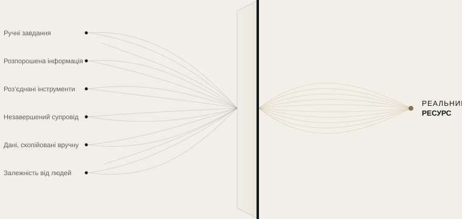

Автоматизація
Ми перетворюємо рутинні завдання на автоматичні процеси за правилами, які визначаємо разом із вами.
АВТОМАТИЗАЦІЯ РЕСУРСІВ
Більшості компаній не потрібні нові інструменти. Їм потрібно знати, куди зникають їхні час, інформація та увага.
SKURX SYSTEMS визначає, де втрачається ресурс, і перетворює його на чіткіші, пов’язані та ефективніші робочі процеси.
ЩО МИ РОБИМО
Ми визначаємо, де ваша компанія втрачає ресурс, і вивільняємо його за допомогою автоматизації, пов’язаних інструментів і штучного інтелекту там, де це має сенс.

НАШІ ПОСЛУГИ
Ми перетворюємо рутинні завдання на автоматичні процеси за правилами, які визначаємо разом із вами.
Для того, що не розв’язати правилом: ШІ підсилює вашу команду, а не замінює її.
Ми поєднуємо ваші інструменти, щоб інформація переходила з одного в інший без чиєїсь участі.
ЯК МИ ПРАЦЮЄМО
Ми починаємо не з технології, а з питання: де ваша компанія втрачає ресурс і чому?
Ми знайомимося з вашою компанією зсередини й спостерігаємо, як ваша команда працює щодня.
Ми знаходимо, де втрачаються час, інформація чи потенційні клієнти, і чому.
Ми кажемо, що змінили б, а чого краще не чіпати.
Ми запускаємо рішення, тестуємо його разом із вами й налаштовуємо, доки воно не працюватиме так, як потрібно вашій команді.
ПЕРШИЙ КРОК
За тиждень ми аналізуємо, як працює ваша компанія, і передаємо вам чітку карту: що забирає ресурс, що можна автоматизувати і в якому порядку. Звіт залишається у вас, хоч би яке рішення ви ухвалили.
Кожен процес описано зрозумілою мовою.
Облікові записи, інструменти й дані належать вам.
Ви бачите, що і коли зробила кожна автоматизація.
Якщо ми припинимо співпрацю, усе залишиться вашим.
ПРИКЛАДИ ЗА ГАЛУЗЯМИ
Ілюстративні сценарії на основі типових ситуацій. Ми працюємо з компаніями будь-якої галузі по всій Іспанії.
Усе працює далі, навіть коли в офісі вже нікого немає.